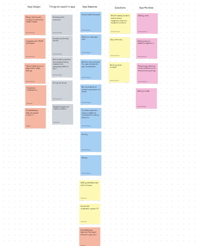

Problem Statement

USC students need a way to conveniently call attention to/report problems regarding campus or any other university-related problems, as there is no current streamlined method.
Affinity Diagram
The planning for a reporting app is summed up in this paper, with an emphasis on the app's design and intended functions. Important things include making sure the software can stop repression and putting in place a suitable moderation system to handle the risk that users would treat it like social media.
Sketches

The designs depict the app's two key user flows: creating a post (a petition with a signature goal) and marking a problem on a map. The posting flow contains screens for logging in and creating posts, as well as a signature notification system for tracking milestones.